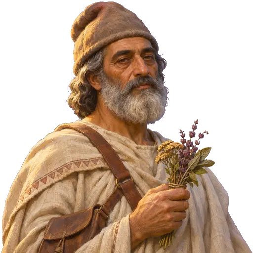
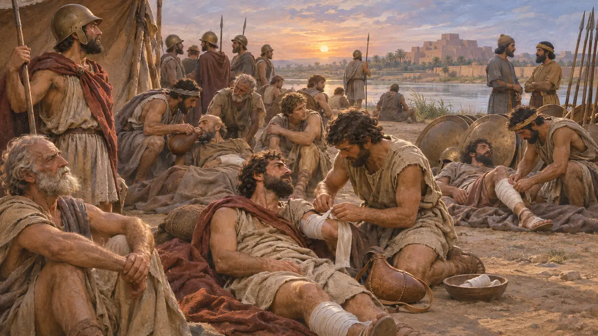
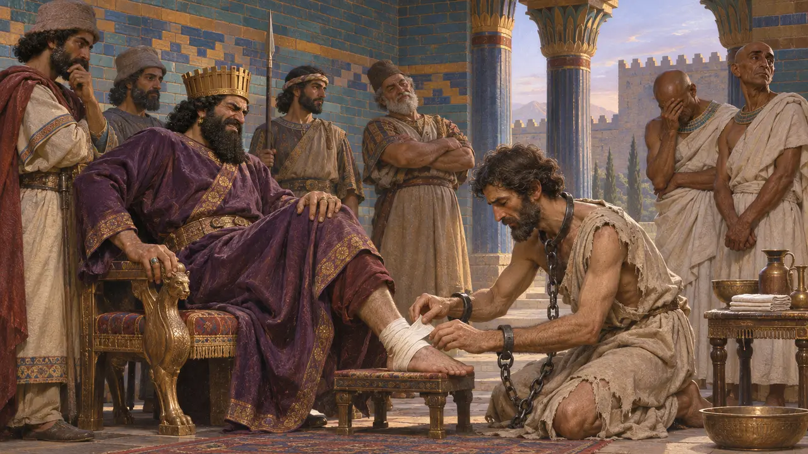
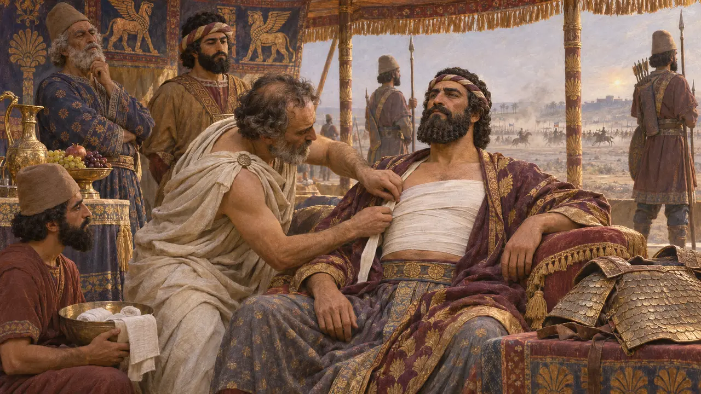
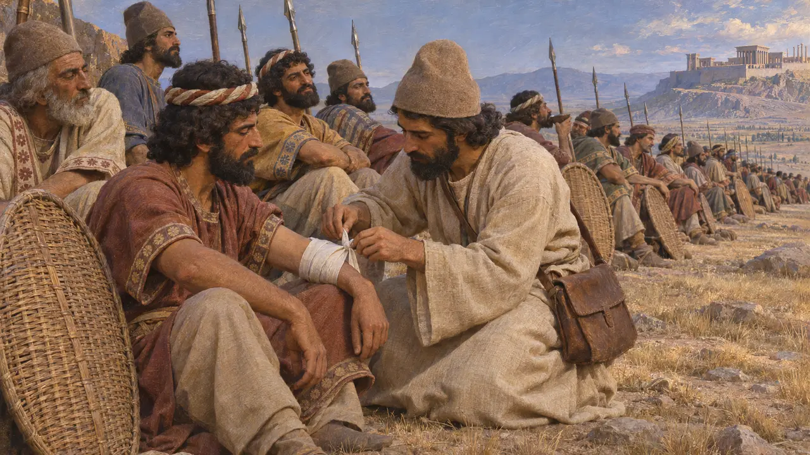

Field Physician
Army doctors of the Persian age, 6th-5th centuries BCE
Armies of this age carried physicians for the wounded, though few sources name them. The Persian court prized foreign doctors, above all Egyptians and then Greeks. Xenophon, marching home with the Ten Thousand, says how the Greeks chose eight men as doctors because of the many wounded.
游戏中： In the game the barracks trains him. He walks to the worst wounded man he can see and tends those around him, so your men last longer in a fight. He picks no fights, earns no rank, and does not count toward the garrison decree.

Eight doctors for the wounded
古代记述Retreating through Mesopotamia with their wounded, the Greek Ten Thousand halted for three days and appointed eight men as doctors, because there were so many hurt. Xenophon does not say how much these men knew. What mattered was that someone was named to do the work.
Xenophon, Anabasis 3.4.30


A doctor on the battlefield
古代记述Ctesias, a Greek physician at the court of Artaxerxes II, was in the field at Cunaxa in 401 BCE and said he treated the King's wound himself. Xenophon cites him for this, so at least one royal doctor rode with the army.
Xenophon, Anabasis 1.8.26

What the game imagines
争夺中No source describes Persian army doctors at work among the ranks, or gives them a uniform. The robe, the satchel and a physician walking the line are this game's picture of them, not a record.
No direct evidence; the game's reconstruction
来源
- Xenophon, Anabasis 1.8.26, 3.4.30
- Herodotus 3.1, 3.129-130